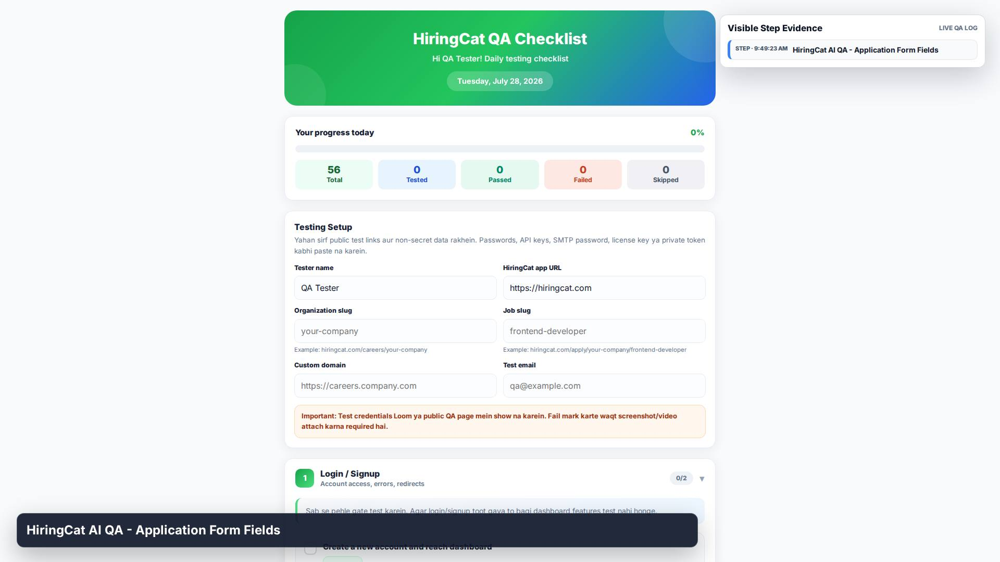
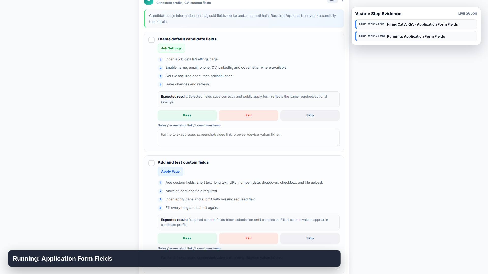
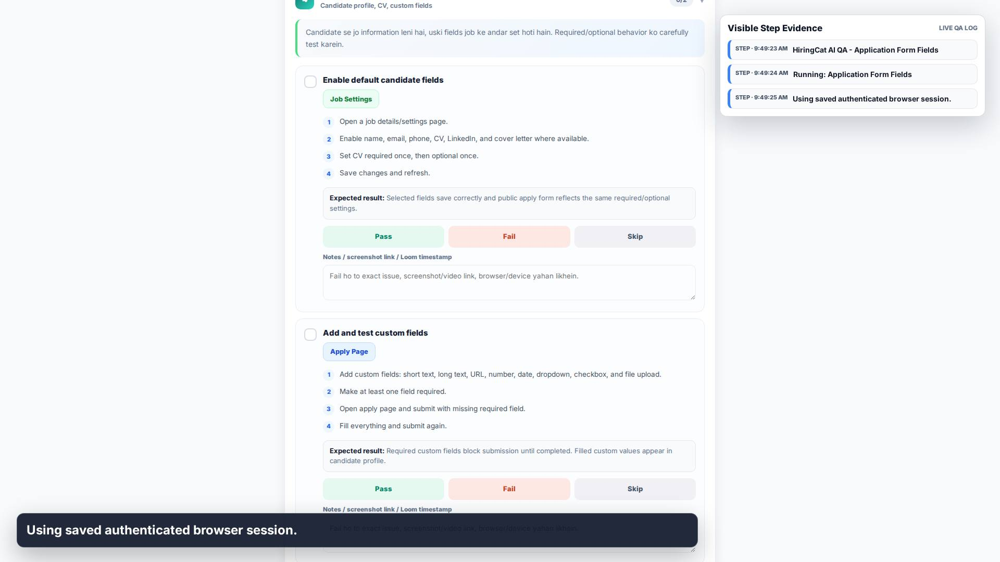
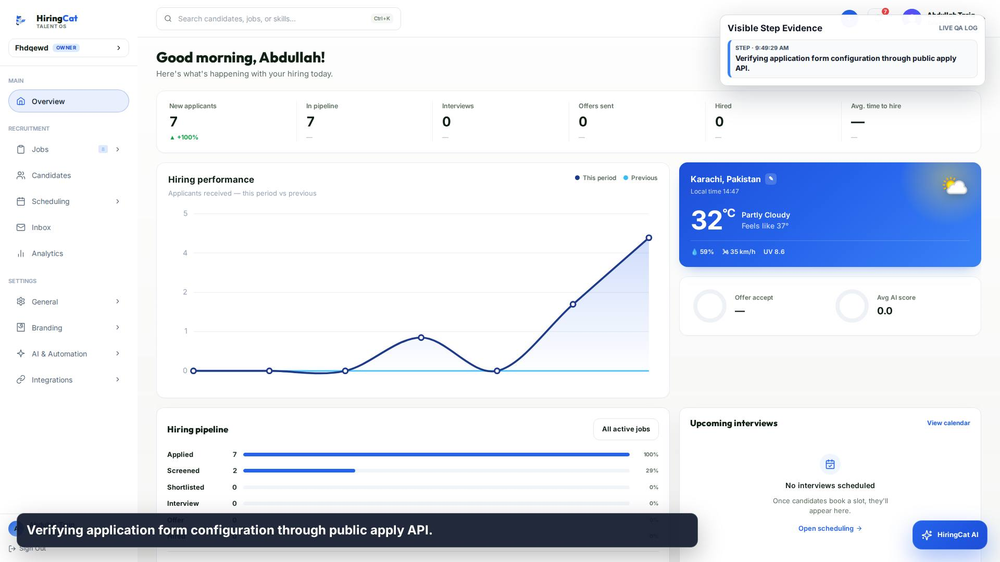
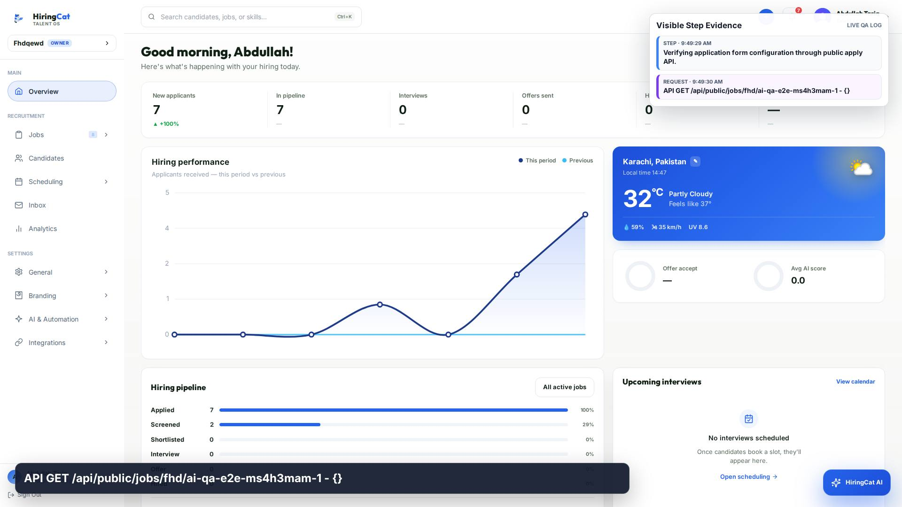
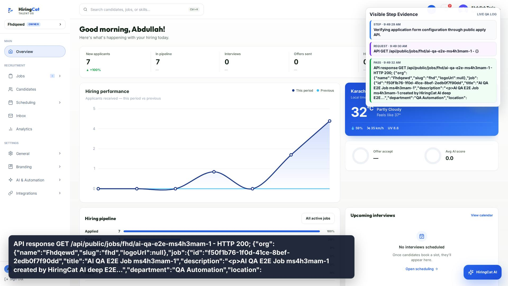
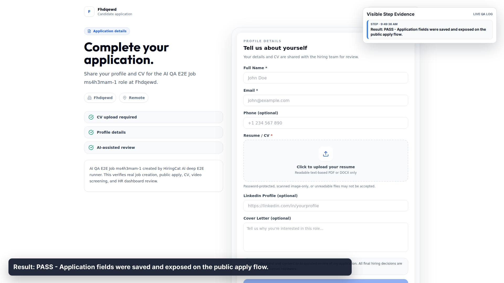

1. STEP
HiringCat AI QA - Application Form Fields

HiringCat AI QA - Application Form Fields

Running: Application Form Fields

Using saved authenticated browser session.

Verifying application form configuration through public apply API.

API GET /api/public/jobs/fhd/ai-qa-e2e-ms4h3mam-1 - {}

API response GET /api/public/jobs/fhd/ai-qa-e2e-ms4h3mam-1 - HTTP 200; {"org":{"name":"Fhdqewd","slug":"fhd","logoUrl":null},"job":{"id":"f50f1b76-1f0d-41ce-8bef-2edb0f7f90dd","title":"AI QA E2E Job ms4h3mam-1","description":"<p>AI QA E2E Job ms4h3mam-1 created by HiringCat AI deep E2E...","department":"QA Automation","location":

Result: PASS - Application fields were saved and exposed on the public apply flow.